Esos ladrones se llevaron nuestras vacas y ovejas.
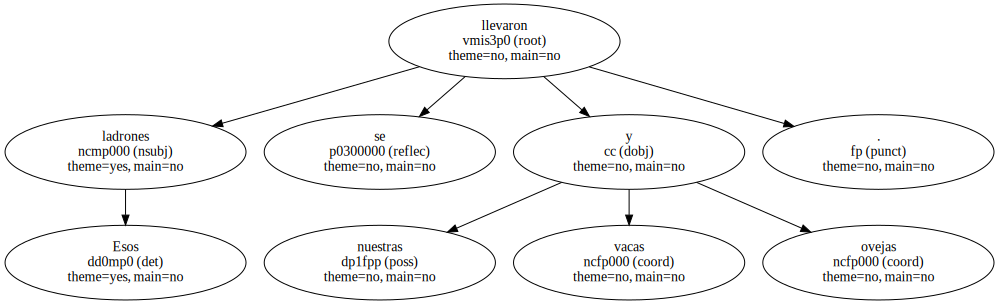La Policía de Kwazulu lo vio todo y no hizo nada.

¿ Por qué ? - , se pregunta.
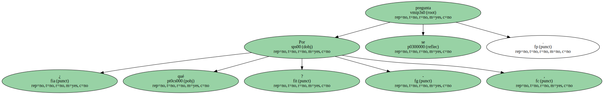Mientras , en Durban , a poco más de 15 minutos de los - campos de batalla - de los - townships - la vida continúa sin sobresaltos.
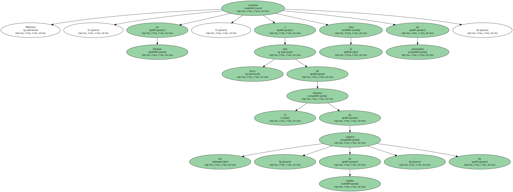Los surfistas disfrutan de las olas en las playas de la ciudad.
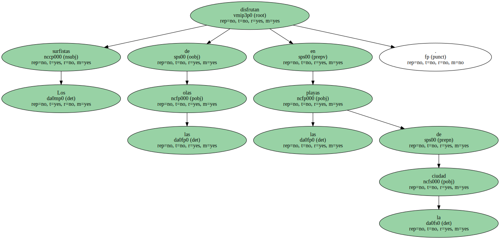Son las cinco de la mañana.
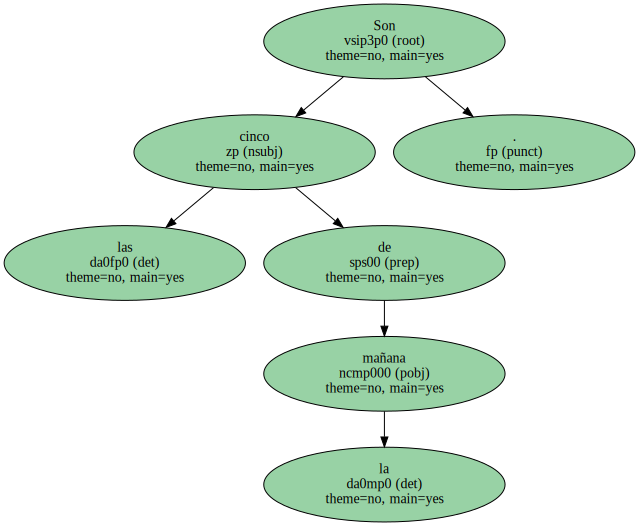Algunos rezagados abandonan el bar Joe's , uno de los clubes preferidos por la juventud - blanca - del lugar.
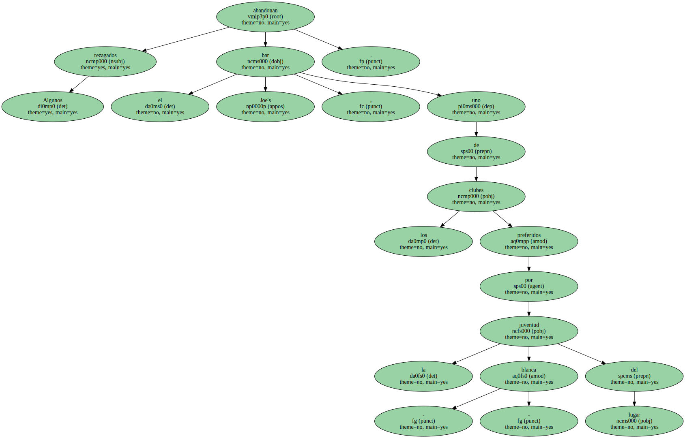Aquí , en el Sur Bronx , no crecía más que la mala hierba.
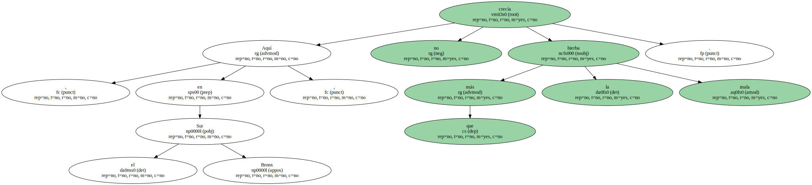Hasta que un buen día llegó José Soto y plantó unos cilandrillos.
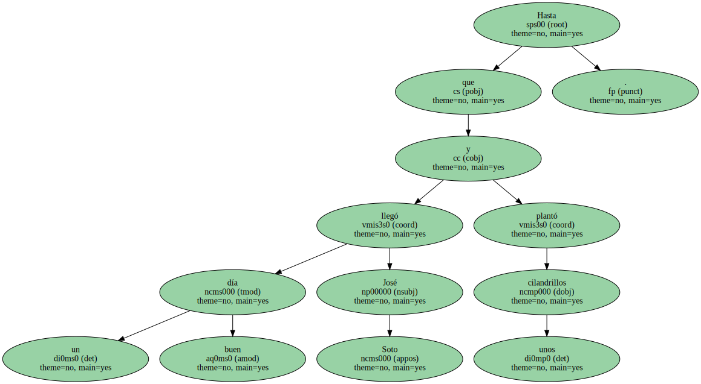Y después levantó cuatro paredes de madera y le puso un - silin - ( techo ) al chiringuito.

Y luego dio una fiesta e invitó a sus amigos.
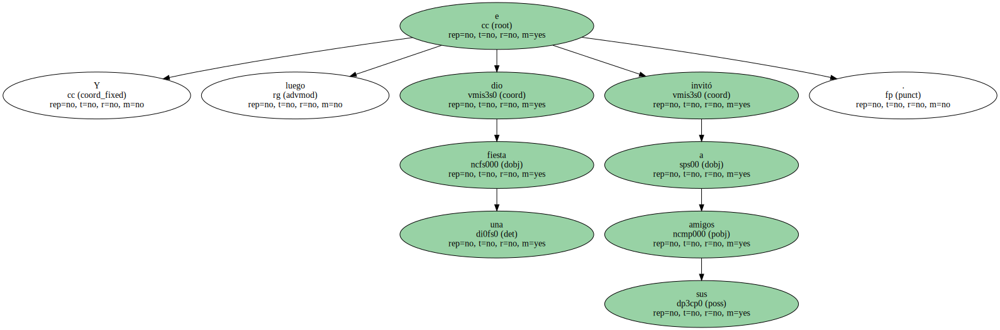Y cantaron la - plena - , bailaron la - bomba - , comieron - mondongo - y jugaron al dominó , como si en vez de Nueva York estuvieran en su añorado San Juan.
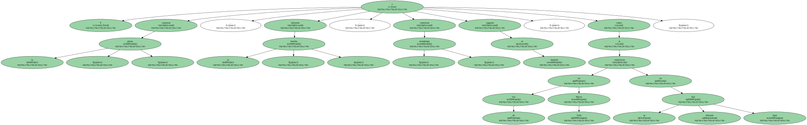Así nació el Rincón Criollo , la - casita - con más solera en el barrio con más miseria , el símbolo de la cultura boricua en una ciudad sin raíces que nunca entendió la nostalgia natural del portorriqueño.
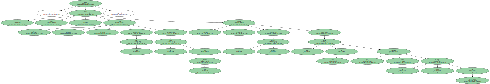Diecisiete años han pasado desde entonces , y las - casitas - ( versión caribeña de las casas del pueblo ) han ido creciendo espontáneamente en las zonas más lumpen de Nueva York.
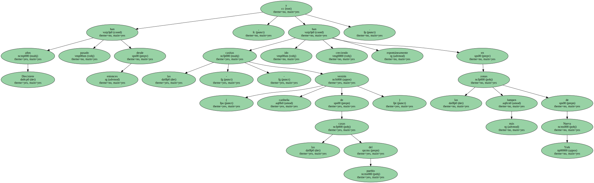Son ya más de cincuenta , y al Ayuntamiento le ha entrado de pronto una especie de sofocón : hay que silenciar las maracas y las congas , hay que poner fin a las noches de - plena - y - bomba - , hay que hacer bailar a todos al mismo son.
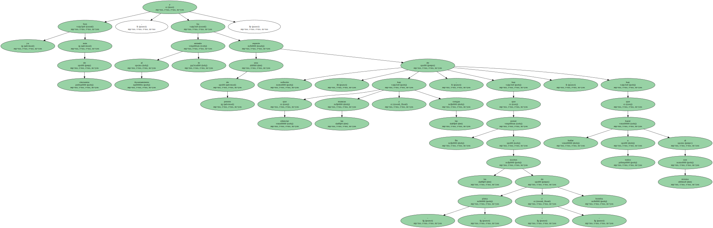Si Dios o la Virgen no lo remedian , el Rancho Criollo desaparecerá este mismo año del mapa para dejar sitio a un proyecto residencial.
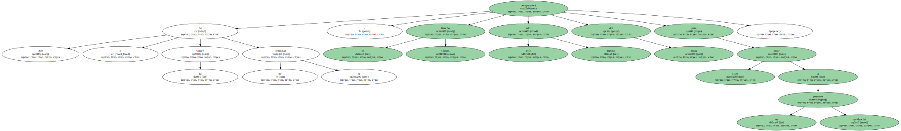